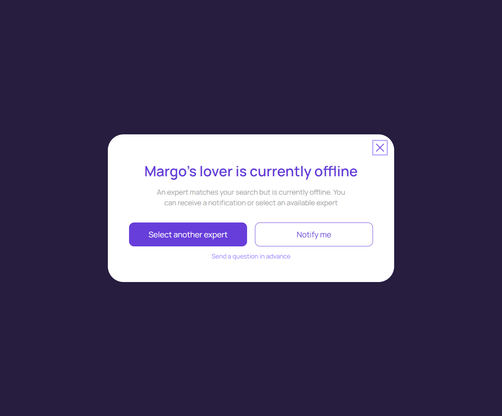
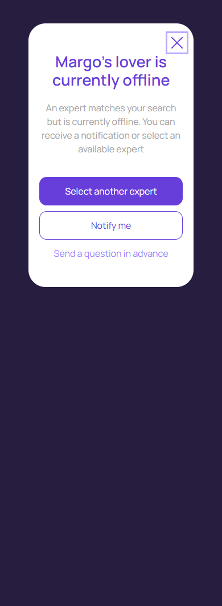

Эксперт offline
account/expert-offline.html
Предложить честный следующий шаг без замены.
| Когда открывается | Попытка начать с offline экспертом |
|---|---|
| Данные | expertId; status; доступные альтернативы; запрос уведомления. |
| Сценарий | Select another → picker; Notify → канал; Send in advance → вопрос в постоянный диалог. |
| Переходы | Подбор эксперта · Канал уведомления · Вопрос перед консультацией |
Общая и предметная логика. Снимки и подписи элементов — исходная редакция макета; поздние уточнения ТЗ имеют приоритет в своей области. Это не проверка текущего сайта.
Состояние 1280 · 1280 × 1062


Элементы и ожидаемые действия
| Элемент | Название в макете | Действие | Ожидаемый результат |
|---|---|---|---|
| E001 Виден | Close | Закрыть локальное окно или вернуться к инициатору; Stay отменяет намерение завершить. | Вернуть фокус и исходный контекст. Не выполнять оплату, удаление или Complete. При неизвестном результате платежа сначала сверить заказ. |
| E002 Виден | Select another expert | Открыть новый подбор или явно расширить выбранные ограничения. | Новый эксперт принимается только кликом клиента; предыдущая история не переносится другому эксперту. |
| E003 Виден | Notify me | Открыть выбор канала для уведомления о конкретном эксперте. | До подтверждения канала подписка не создана; выбранный эксперт сохраняется. |
| E004 Виден | Send a question in advance | Открыть вопрос/постоянный диалог с явно выбранным экспертом; при необходимости сначала вход. | Бесплатный диалог и welcome bonus различаются; нет платного Start от одного нажатия. |
Состояние 390 · 390 × 1062


Элементы и ожидаемые действия
| Элемент | Название в макете | Действие | Ожидаемый результат |
|---|---|---|---|
| E001 Виден | Close | Закрыть локальное окно или вернуться к инициатору; Stay отменяет намерение завершить. | Вернуть фокус и исходный контекст. Не выполнять оплату, удаление или Complete. При неизвестном результате платежа сначала сверить заказ. |
| E002 Виден | Select another expert | Открыть новый подбор или явно расширить выбранные ограничения. | Новый эксперт принимается только кликом клиента; предыдущая история не переносится другому эксперту. |
| E003 Виден | Notify me | Открыть выбор канала для уведомления о конкретном эксперте. | До подтверждения канала подписка не создана; выбранный эксперт сохраняется. |
| E004 Виден | Send a question in advance | Открыть вопрос/постоянный диалог с явно выбранным экспертом; при необходимости сначала вход. | Бесплатный диалог и welcome bonus различаются; нет платного Start от одного нажатия. |